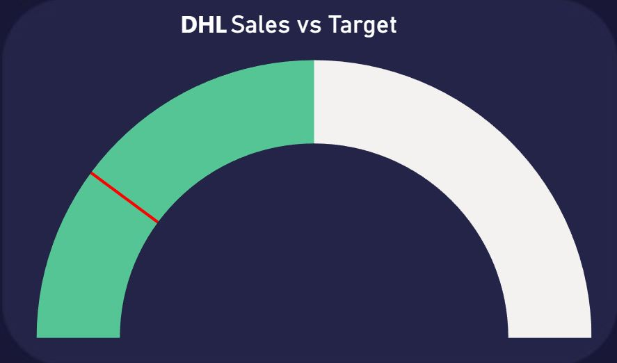
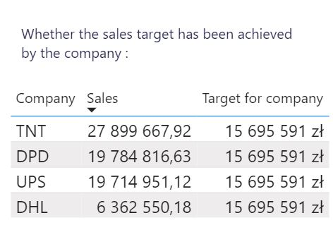

Visualization shows if company that we choose on dashboard achieved the target. If yes then line is green otherwise red.

This visualization is on third page. It is tooltip page. I added that to KPI visualization with company Sales vs Target. You can see exactly every company sales.